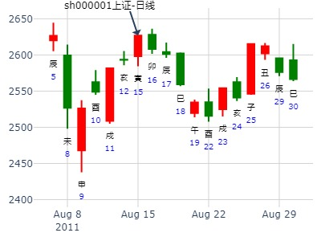

主帖标题: 数理卦成卦法汇总
以上一日收盘价为主卦,以今日收盘价为变卦
例:002269 2021/01/28
庚子 己丑 丙子 丙申 (申酉空) 庚子年腊月十六(2021/01/28 15:00:00)
天雷无妄 天山遁
青龙 妻财戌土 ／ 妻财戌土 ／
玄武 官鬼申金 ／ 官鬼申金 ／ 应
白虎 子孙午火 ／ 世 子孙午火 ／
腾蛇 妻财辰土 × 官鬼申金 ／
勾陈 兄弟寅木 ∥ 子孙午火 ∥ 世
朱雀 父母子水 ○ 应 妻财辰土 ∥
300543的周卦，涨0.1%
公历时间：2020年7月1日7时39分
干 支：庚子年 壬午月 乙巳日 庚辰时
旬 空：辰巳 申酉 寅卯 申酉
神 煞：驿马─亥 桃花─午 日禄─卯 贵人─子，申
巽宫：天雷无妄（六冲） 乾宫：天山遁
六神 【本 卦】 【变 卦】
玄武 ▄▄▄▄▄ 妻财壬戌土 ▄▄▄▄▄ 妻财壬戌土
白虎 ▄▄▄▄▄ 官鬼壬申金 ▄▄▄▄▄ 官鬼壬申金 应
螣蛇 ▄▄▄▄▄ 子孙壬午火 世 ▄▄▄▄▄ 子孙壬午火
勾陈 ▄▄ ▄▄ 妻财庚辰土 × ▄▄▄▄▄ 官鬼丙申金
朱雀 ▄▄ ▄▄ 兄弟庚寅木 ▄▄ ▄▄ 子孙丙午火 世
青龙 ▄▄▄▄▄ 父母庚子水 应○ ▄▄ ▄▄ 妻财丙辰土
主帖标题: 下周个股涨跌
色子卦 6601下周
公历时间：2020年4月3日13时28分
干 支：庚子年 己卯月 丙子日 乙未时
旬 空：辰巳 申酉 申酉 辰巳
巽宫：天雷无妄（六冲） 乾宫：天山遁
六神 【本 卦】 【变 卦】
青龙 ▄▄▄▄▄ 妻财壬戌土 ▄▄▄▄▄ 妻财壬戌土
玄武 ▄▄▄▄▄ 官鬼壬申金 ▄▄▄▄▄ 官鬼壬申金 应
白虎 ▄▄▄▄▄ 子孙壬午火 世 ▄▄▄▄▄ 子孙壬午火
螣蛇 ▄▄ ▄▄ 妻财庚辰土 × ▄▄▄▄▄ 官鬼丙申金
勾陈 ▄▄ ▄▄ 兄弟庚寅木 ▄▄ ▄▄ 子孙丙午火 世
朱雀 ▄▄▄▄▄ 父母庚子水 应○ ▄▄ ▄▄ 妻财丙辰土
张三汉贴，6601 姑且以600601来看。 杂以600409
占事: 5月5日庚戌日沪市大盘指数涨跌！
起卦方式：手工指定 周易天地 www.64gua.com六爻线上排盘系统
公历时间：2009年5月4日15时22分
干支：己丑年 戊辰月 己酉日 壬申时 旬空：午未 戌亥 寅卯 戌亥
巽宫：天雷无妄（六冲） 乾宫：天山遁
六神 【本 卦】 【变 卦】
勾陈 ▄▄▄▄▄ 妻财壬戌土 ▄▄▄▄▄ 妻财壬戌土
朱雀 ▄▄▄▄▄ 官鬼壬申金 ▄▄▄▄▄ 官鬼壬申金 应
青龙 ▄▄▄▄▄ 子孙壬午火 世 ▄▄▄▄▄ 子孙壬午火
玄武 ▄▄ ▄▄ 妻财庚辰土 X-> ▄▄▄▄▄ 官鬼丙申金
白虎 ▄▄ ▄▄ 兄弟庚寅木 ▄▄ ▄▄ 子孙丙午火 世
螣蛇 ▄▄▄▄▄ 父母庚子水 应O-> ▄▄ ▄▄ 妻财丙辰土
出生年：2593.17年 性别：男 占事: 测上证8.19星期五收盘走势？8.15
起卦方式：手动摇卦 周易天地www.64gua.com六爻线上排盘系统
公历时间：2011年8月15日6时21分
干支：辛卯年 丙申月 壬寅日 癸卯时
旬空：午未 辰巳 辰巳 辰巳
巽宫：天雷无妄（六冲） 乾宫：天山遁
六神 【本 卦】 【变 卦】
白虎 ▄▄▄▄▄ 妻财壬戌土 ▄▄▄▄▄ 妻财壬戌土
螣蛇 ▄▄▄▄▄ 官鬼壬申金 ▄▄▄▄▄ 官鬼壬申金 应
勾陈 ▄▄▄▄▄ 子孙壬午火 世 ▄▄▄▄▄ 子孙壬午火
朱雀 ▄▄ ▄▄ 妻财庚辰土 X-> ▄▄▄▄▄ 官鬼丙申金
青龙 ▄▄ ▄▄ 兄弟庚寅木 ▄▄ ▄▄ 子孙丙午火 世
玄武 ▄▄▄▄▄ 父母庚子水 应O-> ▄▄ ▄▄ 妻财丙辰土

主帖标题: 10月26日上证大盘涨跌
占问事情：下午大盘走势 起卦方式：手工指定
公历时间：2015年10月26日12时7分
干 支：乙未年 丙戌月 乙亥日 壬午时（申酉空）
巽宫：天雷无妄（六冲） 乾宫：天山遁
六神 【本 卦】 【变 卦】
玄武 ▄▄▄▄▄ 妻财壬戌土 ▄▄▄▄▄ 妻财壬戌土
白虎 ▄▄▄▄▄ 官鬼壬申金 ▄▄▄▄▄ 官鬼壬申金 应
螣蛇 ▄▄▄▄▄ 子孙壬午火 世 ▄▄▄▄▄ 子孙壬午火
勾陈 ▄▄ ▄▄ 妻财庚辰土 ×-> ▄▄▄▄▄ 官鬼丙申金
朱雀 ▄▄ ▄▄ 兄弟庚寅木 ▄▄ ▄▄ 子孙丙午火 世
青龙 ▄▄▄▄▄ 父母庚子水 应○-> ▄▄ ▄▄ 妻财丙辰土
主帖标题: 数理卦成卦法汇总
想和干 发表于 2021-1-29 14:24
以上一日收盘价为主卦,以今日收盘价为变卦
例:002269 2021/01/28
庚子 己丑 丙子 丙申 (申酉空) 庚子年 ...
002549明天卦，涨0.1%
公历时间：2020年12月27日18时41分
干 支：庚子年 戊子月 甲辰日 癸酉时
旬 空：辰巳 午未 寅卯 戌亥
巽宫：天雷无妄（六冲） 乾宫：天山遁
六神 【本 卦】 【变 卦】
玄武 ▄▄▄▄▄ 妻财壬戌土 ▄▄▄▄▄ 妻财壬戌土
白虎 ▄▄▄▄▄ 官鬼壬申金 ▄▄▄▄▄ 官鬼壬申金 应
螣蛇 ▄▄▄▄▄ 子孙壬午火 世 ▄▄▄▄▄ 子孙壬午火
勾陈 ▄▄ ▄▄ 妻财庚辰土 × ▄▄▄▄▄ 官鬼丙申金
朱雀 ▄▄ ▄▄ 兄弟庚寅木 ▄▄ ▄▄ 子孙丙午火 世
青龙 ▄▄▄▄▄ 父母庚子水 应○ ▄▄ ▄▄ 妻财丙辰土